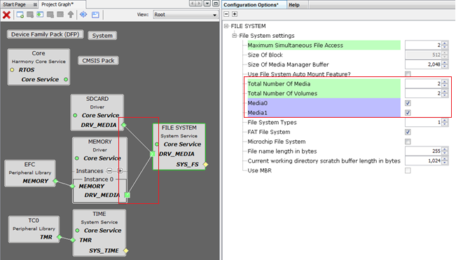
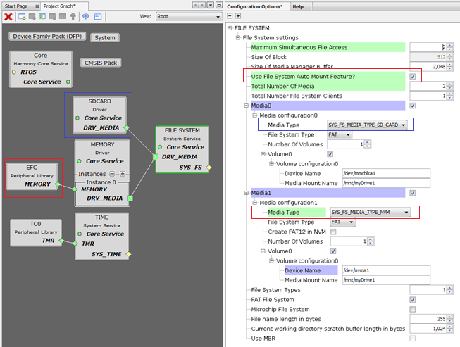

File System Service Library should be configured via MHC. Below are the Snapshot of the MHC configuration window for Memory driver and brief description.

File System Configuration with Auto Mount Disabled

File System Configuration with Auto Mount Enabled
Configuration Options:
- Maximum Simultaneous File Access
- Maximum Number of files which can be accesses by application
- Size Of Block
- Block Size used by File System layer to chunk the application data and to send to attached media
- Size Of Media Manager Buffer
- Media Manager Buffer size to store Block Data
- Use File System Auto Mount Feature
- Enables auto mount feature for all the media's
- Total Number Of Media
- Number of media to be attached to file system
- Total Number Of Volumes
- Number of volumes to be created for each media
- MediaX
- Media details to be configured when Auto mount feature is enabled.
- File System Types
- Number of file systems used
- FAT File System
- When Selected Specifies FAT File system will be used
- Microchip File System
- When Selected Specifies MPFS File system will be used
- File Name Length
- Max file name length to be supported
- Current Working Directory Scratch buffer length in Bytes
- Buffer size to store the current directory path
- Use MBR
- Use Master Boot Record.